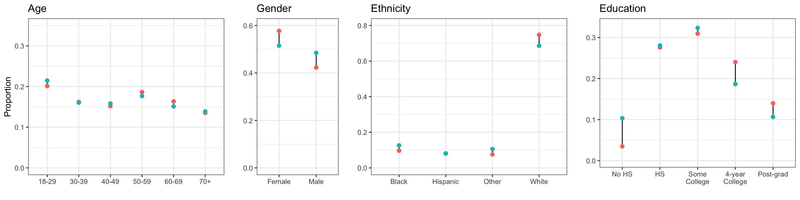
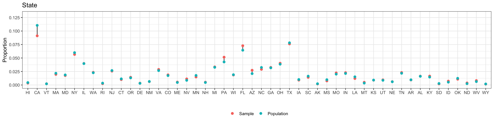

Chapter 1 Survey and Population Datasets
In these case studies we use the 2018 Cooperative Congressional Election Study (CCES), a US nationwide survey designed by a consortium of 60 research teams and administered by YouGov as our source of public opinion data, and the 2014-2018 American Community Survey (ACS), a set of yearly surveys conducted by the US Census, as our source of public opinion data.
1.1 Survey Data
The 2018 CCES raw survey data can be downloaded from the CCES Dataverse
via the link: https://dataverse.harvard.edu/api/access/datafile/3588803?format=original&gbrecs=true;
by default the downloaded filename is called cces18_common_vv.csv.
The outcome of interest that we will use for this introduction is required abortion coverage by workplace insurance:
Allow employers to decline coverage of abortions in insurance plans (Support / Oppose)
Survey data must include some respondent demographic information and some type of geographic indicator (e.g. state, congressional district). Apart from the outcome measure, we will consider a set of factors to define the geographic-demographic subgroups. Even though some of these variables may be continous (e.g. age, income), we must make sure to split them into intervals to create a factor with different levels. Importantly, and as we will see in a moment, these factors and their corresponding levels need to match the ones in the postratification table. In this case, we will use the following demographic-geographic factors with the indicated levels:
- State: 50 US states (\(S = 50\)).
- Sex: Female, Male (\(G = 2\)).
- Age: 18-29, 30-39, 40-49, 50-59, 60-69, 70+ (\(A = 6\)).
- Ethnicity: (Non-hispanic) White, Black, Hispanic, Other (which also includes Mixed) (\(R = 4\)).
- Education: No HS, HS, Some college, 4-year college, Post-grad (\(E = 5\)).
Every MRP study requires some degree of data wrangling in order to make the factors in the survey of interest match the factors available in census data and other population-level surveys and census. Here we use the R Tidyverse to process the survey data so that it aligns with the postratification table. Because initial recoding errors are fatal, it is important to check that each step of the recoding process produces expected results, either by viewing or summarizing the data. Because the data is all tabular data, we use the utility function head to inspect the first few lines of a dataframe before and after each operation.
First, we examine the contents of the data as downloaded, looking only at those columns which provide the above demographic-geographic information which are labeled inputstate, gender, birthyr, race, educ.
cces18_df <- read.csv("cces18_common_vv.csv")| inputstate | gender | birthyr | race | educ |
|---|---|---|---|---|
| 24 | 2 | 1964 | 5 | 4 |
| 47 | 2 | 1971 | 1 | 2 |
| 39 | 2 | 1958 | 1 | 3 |
| 6 | 2 | 1946 | 4 | 6 |
| 21 | 2 | 1972 | 1 | 2 |
| 4 | 2 | 1995 | 1 | 1 |
The demographics for the survery must match the demographics in the population data. If there is not a direct one-to-one relationship between the survey and the population data, the survey data must be recoded until a clean mapping exists. For example, the CCES includes ‘Middle Eastern’ as an option for ethnicity, but this distinction is not available in the post-stratification data, which comes from the the 2014-2018 American Community Survey (ACS), a set of yearly surveys conducted by the US Census. Therefore, people who identified as ‘Middle Eastern’ in the CCES need to be recoded as ‘Other’.
We write R functions to encapsulate the recoding steps.
Both the CCES survey and the US Census data use numeric FIPS codes to record state information.
We can use R factors to map FIPS codes to the standard two-letter state name abbreviations.
Because both surveys use this encoding, we make this into a reusbale function recode_fips.
The function recode_cces recodes the survey.
To facilitate the post-stratification process, where we use the tidyverse to join by column name, it adds columns to the survey data frame whose name
matches the columns in the population data. If both datasets have matching column names, we rewrite the column data as needed.
state_ab <- datasets::state.abb
state_fips <- c(1,2,4,5,6,8,9,10,12,13,15,16,17,18,19,20,21,22,23,24,
25,26,27,28,29,30,31,32,33,34,35,36,37,38,39,40,41,42,
44,45,46,47,48,49,50,51,53,54,55,56)
# recode_fips
# The US census and CCES data use FIPS codes to identify states.
# Use factors to map codes to 2-letter stats abbreviations.
# Because the FIPS codes include the district of Columbia and US territories
# there are some gaps in the numbering system.
recode_fips <- function(df, column) {
factor(df[[column]], levels = state_fips, labels = state_ab)
}
# rewrite the CCES demographics needed for post-stratification
recode_cces <- function(df) {
## State -- factor, labels state abb, levels FIPS code
df$state <- recode_fips(df, "inputstate")
## Gender -- dichotomous (coded as -0.5 Female, +0.5 Male)
df$male <- abs(df$gender-2)-0.5
## ethnicity -- factor
df$eth <- factor(df$race, levels = 1:8,
labels = c("White", "Black", "Hispanic", "Asian", "Native American", "Mixed", "Other", "Middle Eastern")) %>%
fct_collapse("Other" = c("Asian", "Other", "Middle Eastern", "Mixed", "Native American"))
## Age -- cut into factor
df$age <- 2018 - df$birthyr
df$age <- cut(as.integer(df$age), breaks = c(0, 29, 39, 49, 59, 69, 120),
labels = c("18-29","30-39","40-49","50-59","60-69","70+"),
ordered_result = TRUE)
## Education -- factor
df$educ <- factor(as.integer(df$educ),
levels = 1:6,
labels = c("No HS", "HS", "Some college", "Associates", "4-Year College", "Post-grad"), ordered = TRUE) %>%
fct_collapse("Some college" = c("Some college", "Associates"))
return(df)
}We recode the CCES survey.
cces18_df <- recode_cces(cces18_df)We check the recoding by viewing the recoded columns of interest.
head(select(cces18_df, state, inputstate, male, gender, eth, race, age, birthyr, educ))| state | inputstate | male | gender | eth | race | age | birthyr | educ |
|---|---|---|---|---|---|---|---|---|
| MD | 24 | -0.5 | 2 | Other | 5 | 50-59 | 1964 | Some college |
| TN | 47 | -0.5 | 2 | White | 1 | 40-49 | 1971 | HS |
| OH | 39 | -0.5 | 2 | White | 1 | 60-69 | 1958 | Some college |
| CA | 6 | -0.5 | 2 | Other | 4 | 70+ | 1946 | Post-grad |
| KY | 21 | -0.5 | 2 | White | 1 | 40-49 | 1972 | HS |
| AZ | 4 | -0.5 | 2 | White | 1 | 18-29 | 1995 | No HS |
Next we get the outcome of interest: all responses to the above question on abortion, coded as “CC18_321d” in the CCES survey. As before, we encapsulate this in an R function which is just general enough to allow us to do the same analysis on any question in the CCES survey. This function drops non-response information; if this information is not missing at random, this introduces (more) bias into our survey.
# Return dataframe containing question as 0,1 outcome
# and columns for demographic data used in the regression
get_question <- function(df, question, label) {
df[[label]] <- abs(df[[question]]-2)
# Clean and remove NAs
select(df, all_of(label), state, eth, male, age, educ) %>% drop_na()
}
# Dataframe containing the outcome and predictors
q_abort_df <- get_question(cces18_df, "CC18_321d", "abortion")| abortion | state | eth | male | age | educ |
|---|---|---|---|---|---|
| 1 | MD | Other | -0.5 | 50-59 | Some college |
| 1 | TN | White | -0.5 | 40-49 | HS |
| 1 | OH | White | -0.5 | 60-69 | Some college |
| 0 | CA | Other | -0.5 | 70+ | Post-grad |
| 1 | KY | White | -0.5 | 40-49 | HS |
| 0 | AZ | White | -0.5 | 18-29 | No HS |
The full 2018 CCES consist of almost 60,000 respondents. However, most studies work with a smaller national survey. To show how MRP works in these cases, we will take a random sample of 10,000 participants of the CCES and work with the sample instead of the full CCES. Obviously, in a more realistic setting we would always use all the data that we have available.
set.seed(1010) # We set the seed to an arbitrary number for reproducibility.
q_abort_10K_df <- q_abort_df %>% sample_n(10000) # name encodes the sample size.| abortion | state | eth | male | age | educ |
|---|---|---|---|---|---|
| 1 | WI | White | -0.5 | 60-69 | 4-Year College |
| 1 | NJ | White | -0.5 | 60-69 | HS |
| 0 | FL | White | -0.5 | 40-49 | HS |
| 1 | FL | White | 0.5 | 70+ | Some college |
| 0 | IL | White | -0.5 | 50-59 | Some college |
| 0 | OK | Other | -0.5 | 18-29 | Some college |
1.2 Population Data
Census data or other population surveys are used to build the poststratification table. This table reflects the number of people in the population of interest corresponding to each combination of the demographic-geographic factors. It is used in the second stage of MRP to poststratify the estimates obtained for each subgroup. Here we will use the 2014-2018 American Community Survey (ACS), a set of yearly surveys conducted by the US Census that provides estimates of the number of US residents as the source of out poststratification variables. The raw ACS survey datasets consist of rows of individual-level and household-level responses. These individual responses have been aggregated as counts per row of the poststratification table. See the appendix for dicussion of processing the ACS data.
As specified above, the poststratification table has States Sex Age Ethnicity Education cells, thus the long form of this table has \(50 \times 2 \times 6 \times 4 \times 5 = 12,000\) rows. There are more rows in the poststratification table than observed units in the CCES subsample, which necessarily implies that there are some combinations in the poststratification table that we don’t observe, and it is likely that there are some combinations which are not in the complete CCES survey.
It is critical that the factors (and their levels) used in the survey match the factors obtained in the census. In principle, MRP is limited to use individual-level variables that are present both the survey and the census, although later in this case study we relax this requirement. For instance, the CCES includes information on respondent’s religion, but as this information is not available in the census we are not able to use this variable. Similarly, the levels of the factors in the census are required to match the ones in the census. For instance, the CCES includes ‘Middle Eastern’ as an option for ethnicity, but the ACS does not. Therefore, people who identified as ‘Middle Eastern’ in the CCES need to be included in the ‘Other’ category.
postrat_df <- read.csv("postrat_data.csv")| X | state | eth | male | age | educ | n |
|---|---|---|---|---|---|---|
| 1 | 1 | White | -0.5 | 18-29 | No HS | 23948 |
| 2 | 1 | White | -0.5 | 18-29 | HS | 59378 |
| 3 | 1 | White | -0.5 | 18-29 | Some college | 104855 |
| 4 | 1 | White | -0.5 | 18-29 | 4-Year College | 37066 |
| 5 | 1 | White | -0.5 | 18-29 | Post-grad | 9378 |
| 6 | 1 | White | -0.5 | 30-39 | No HS | 14303 |
A quick check of the data shows that the ACS also uses FIPS codes. We recode this column and check our work.
postrat_df$state <- recode_fips(postrat_df, "state")| X | state | eth | male | age | educ | n |
|---|---|---|---|---|---|---|
| 1 | AL | White | -0.5 | 18-29 | No HS | 23948 |
| 2 | AL | White | -0.5 | 18-29 | HS | 59378 |
| 3 | AL | White | -0.5 | 18-29 | Some college | 104855 |
| 4 | AL | White | -0.5 | 18-29 | 4-Year College | 37066 |
| 5 | AL | White | -0.5 | 18-29 | Post-grad | 9378 |
| 6 | AL | White | -0.5 | 30-39 | No HS | 14303 |
Here we see that the first row in the poststratification table indicates that there are 23,948 Alabamians that are white, male, between 18 and 29 years old, and without a high school degree.
Every MRP study requires some degree of data wrangling in order to make the factors in the survey of interest match the factors available in census data and other population-level surveys and census, which is why we have taken the time here to show the processing steps and to check our work at every step. The code provided in the Appendix shows how to get the ACS data and tabulate the post-stratification matrix.
1.3 Multilevel Model Group-level Predictors
The individual-response model used in the first stage can include group-level predictors, which tend to reduce unexplained group level variation by accounting for structured differences among the states. For instance, most national-level surveys in the US tend to include many participants from a state such as New York, but few from a small state like Vermont. This can result in noisy estimates for the effect of being from Vermont. The intuition is that by including state-level predictors, such as the Republican voteshare in a previous election or the percentage of Evangelicals at each state, the model is able to account for how similar is Vermont is to New York and other populous states, and therefore to produce more precise estimates. These group-level predictors do not need to be available in the census nor they have to be converted to factors, and in many cases are readily available. A more detailed discussion on the importance of builidng a reasonable model for predicting opinion, and how state-level predictors can be a key element in this regard, can be found in Lax and Phillips (2009b) and Buttice and Highton (2013).
In our example, we will include two state-level predictors: the geographical region (Northeast, North Central, South, and West) and the Republican vote share in the 2016 presidential election. The state-level data is in a CSV file included with this case study. In order to use this data in our analysis, the state column must be coded
statepred_df <- read.csv('statelevel_predictors.csv', stringsAsFactors=TRUE)| state | repvote | region |
|---|---|---|
| AL | 0.6437414 | South |
| AK | 0.5838565 | West |
| AZ | 0.5189002 | West |
| AR | 0.6428514 | South |
| CA | 0.3387179 | West |
| CO | 0.4731667 | West |
1.4 Exploratory Data Analysis
In the previous steps we have obtained a 10,000-person sample from the CCES survey and also generated a poststratification table using census data. As a first exploratory step, we will check if the frequencies for the different levels for the factors considered in the CCES data are similar to the frequencies reported in the census. If this was not the case, we will start suspecting some degree of nonresponse bias in the CCES survey.
For clarity, the levels in the plots follow their natural order in the case of age and education, ordering the others by the approximate proportion of Republican support.


We see that our 10,000-participant CCES sample does not differ too much from the target population according to the American Community Survey. This should not be surprising, as the CCES intends to use a representative sample.
References
Buttice, Matthew K, and Benjamin Highton. 2013. “How Does Multilevel Regression and Poststratification Perform with Conventional National Surveys?” Political Analysis 21 (4).
Lax, Jeffrey R, and Justin H Phillips. 2009b. “How Should We Estimate Public Opinion in the States?” American Journal of Political Science 53 (1): 107–21.